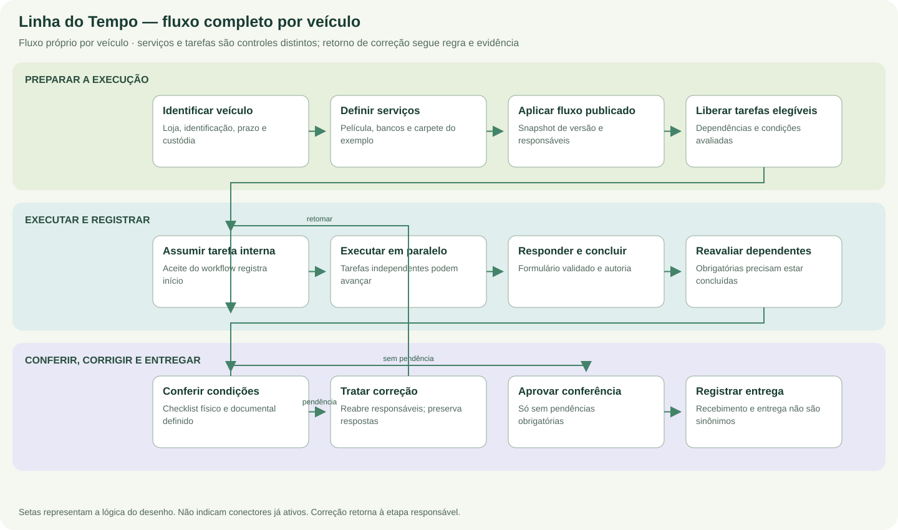

Linha do Tempo
Etapas, formulários, dependências, responsabilidades, evidências, conferência e entrega: um percurso explicável por veículo.
Propósito e valor próprio
A Linha do Tempo é a frente que explica como cada veículo passa do pedido à entrega. Ela precisa mostrar acontecimentos e responsabilidades, permitindo tarefas simultâneas quando não dependem umas das outras. O desenho é operacional: deve ficar claro o que autoriza avançar, quais evidências sustentam a conclusão e como uma correção altera a liberação sem apagar o que aconteceu.
Fluxo completo desta frente


- Identificar e receber o veículo. Veículo identificado e contexto da preparação.
- Definir serviços e responsabilidades. Serviços necessários e prazos registrados.
- Construir o fluxo. Definição salva em rascunho e consistente.
- Publicar e aplicar uma versão. Versão publicada aplicada ao veículo autorizado.
- Liberar e assumir tarefas. Tarefa assumida por um responsável elegível.
- Responder, concluir e reavaliar. Resposta válida e próximos passos reavaliados.
- Registrar prazo, comunicação e pesquisa. Acontecimentos e intenções de comunicação rastreáveis.
- Conferir, corrigir e entregar. Conferência válida e entrega efetivamente registrada.
Para quem e com quais limites
- Operadores e departamentos: assumir e responder tarefas elegíveis da própria unidade.
- Responsáveis por preparação e custódia: registrar recebimento, condições, pendências e conferência.
- Gestores: entender gargalos, prazo, dependências e exceções justificadas.
- Responsáveis pela entrega: conferir condições e registrar a entrega ao comprador de maneira explícita.
| Frente | Responsabilidade | O que a distingue |
|---|---|---|
| Linha do Tempo | Jornada e condições de avanço | Etapas locais, tarefas, conferência e entrega. |
| Hub | Leitura gerencial da promessa | Consulta os acontecimentos relevantes para gestão. |
| Tech | Execução especializada | Produz os fatos e evidências de seus itens; o vínculo automático é conexão futura. |
Explorar a documentação
Operação completa
Entradas, acontecimentos, resultados e exceções, passo a passo.
Explorar projeto →02 / RegrasRegras e critérios
Invariantes, situações especiais e decisões de negócio.
Explorar projeto →03 / EngenhariaCódigo e arquitetura
Componentes, pontos de entrada e responsabilidades.
Explorar projeto →04 / ContratosDados e API
Entidades, endpoints e referências exatas no código.
Explorar projeto →05 / EvidênciasValidação independente
Cenários com dados fictícios, sem exigir conectores.
Explorar projeto →06 / ReferênciaDocumentos técnicos
Especificações e contratos em leitura integral, com origem.
Explorar projeto →